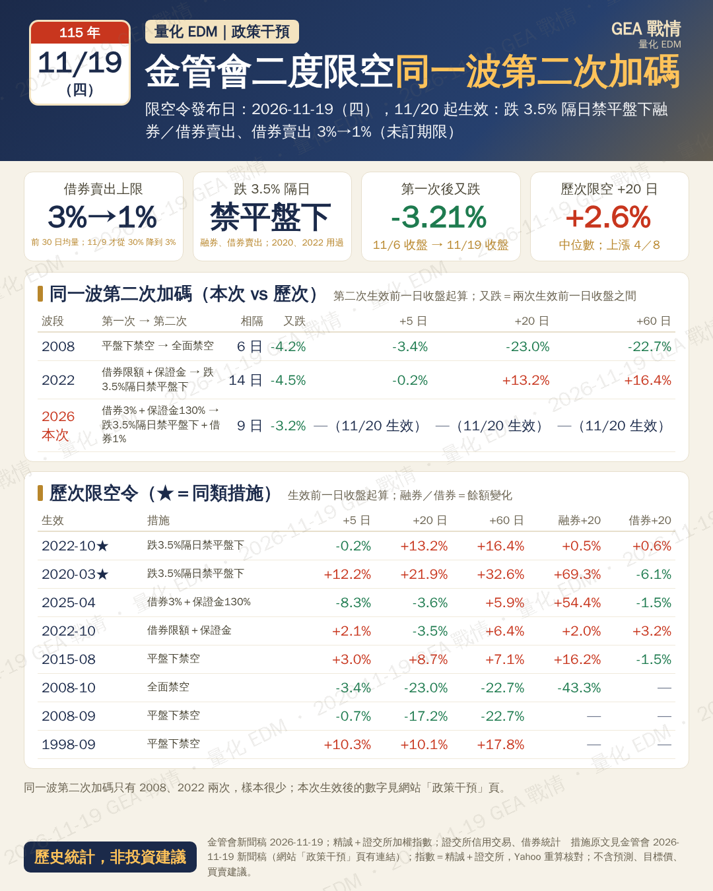

金管會二度限空 EDM（11-19 發布日才出；預覽）
要看的重點- 11-19 資料日那份 EDM 出「金管會二度限空」一張（第一次核對全過就凍結成 data/edm_frozen/short_2026-11-19.json，同一天重跑不重算）
- 11-20 起的資料日：這張不出；11-06 國安基金＋限空令四張也從 11-19 起不再出（快照留著、網站「政策干預」頁照常每天更新）
- 下面兩段是同一段程式分別用資料日 11-19、11-20 跑的實際輸出
- 措施原文：金管會 2026-11-19 新聞稿
資料日 2026-11-19：policy_cards 輸出 1 張
· 政策事件 EDM nsf_2026-11-06：發布日 2026-11-06 ≠ 本份資料日 2026-11-19 → 不出（只在發布當天那份出一次；快照留著）
✓ nsf_short2：卡上 44 個數字逐一用 Yahoo 重算比對
資料日 2026-11-20：policy_cards 輸出 0 張
· 政策事件 EDM nsf_2026-11-06：發布日 2026-11-06 ≠ 本份資料日 2026-11-20 → 不出（只在發布當天那份出一次；快照留著）
· 政策事件 EDM short_2026-11-19：發布日 2026-11-19 ≠ 本份資料日 2026-11-20 → 不出（只在發布當天那份出一次；快照留著）
資料日 2026-11-19（發布日）那份 EDM：出這張下載 PNG

核對通過 卡上 44 個數字逐一用 Yahoo 重算比對
・同一段程式 nsf_edm.policy_cards（pick_edm 正式版也呼叫它）
・核對：卡上 44 個數字逐一用 Yahoo 重算比對